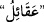
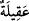
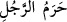

halkının daha anlayışlı ve toplumun ileri gelenlerinin buralarda bulunmasından
dolayıdır. Peygamberler de genellikle bu kimselere gönderilir ve onlar da daha çok
şehirlerde ve kasabalarda otururlar.
Gönderilen bu peygamber onlara âyetlerimizi okur, hakkı söyler ve onları Allah’a
dâvet edip azâbıyla korkutur, cennetiyle müjdeler. Bu, Allah’ın kullar üzerindeki
huccetinin tamam olması ve onların “Keşke bir peygamber gönderseydin de âyetlerine
tâbî olsaydık” diye ileri sürecekleri mâzereti kesin olarak ortadan kaldırmak içindir.
Tekmile’de der ki: “Ümm” Mekke’dir ve “Rasûl” de Hz. Muhammed (s.a.)’dir. Mânâ
şu şekilde olur: Ey Muhammed! Rabbin senin yaşadığın dönemde şehirlerin merkezi
olan “Ümmü’l-kurâ”ya -ki o Mekke’dir- bir peygamber -ki o da sensin- göndermedikçe
Mekke çevresindeki şehirleri helâk edecek değildir.
“O memleketleri helâk edici değildir.” Bu beldelerin merkezine onları Hakk’a dâvet
edip her türlü hâl ve şartta onları irşâd eden bir peygamber gönderdikten sonra da
hemen helâk etmeyiz. “Zâten biz ancak” peygamberimizi yalanlamak ve âyetlerimizi
inkâr etmek suretiyle “halkı zâlim olan memleketleri helâk etmişizdir.”
Zira peygamber göndermenin hedefi, -ilâhî sünnete göre- helâkin gerçekleşmemesi
(adem-i sıhhati)dir; yoksa helâkin vuku değil. Bu yüzden peygamber göndermenin
hemen peşinden helâkin tahakkuku lâzım gelmez.
Âyet, zulmün helâk sebebi olduğuna delâlet eder. Bu yüzden denilmiştir ki, zulüm
hayatı keser, bitkilerin çıkmasına mânî olur. Küfrân da böyledir. Denilir ki: Nîmetler,
denklerine muhtaçtır. Nitekim kadınlardan kerîm ve değerli olanlar da denklerine
muhtaçtır. Azgın kimseler, nimetlerin dengi olamazlar; nitekim bayağı erkekler de harem
ehli, akıl sâhibi kadınların dengi olama
z; “__WORD__ kelimesinin çoğuludur. Her şeyin
değerli ve en iyisine denir. “__WORD__ , kişinin haremi, ehlidir. Kadınlardan kerim
olanlar, erkeklerden düşük kimselerin dengi olamaz. Utanmaya sebep olacağı için
araları ayrılır. Nimet de azgın, kibirli, gururlu, küfür ehli kimselerden soyulup alınır.
Şükür ehline gelince; onların çalışmaları boşa gitmez, bilâkis iyi ve güzel halleri artar.
Diyarı bol bol rızıklandırmak Allah Teâlâ’ya âiddir. Onun nazarında, kullarından
şükredenler ile küfrân-ı nimette bulunanlar arasında bir fark yoktur. (Şükredenin
şükrüne muhtaç olmadığı gibi, küfrân-ı nimete uğramaktan da müstağnîdir.)
Şeyh Sa’dî der ki:
Yeryüzü, herkes için bir sofradır
Bu yağma sofrasında hem düşman hem de dost vardır
Şeyh Abdulvâhid der ki: Bir yarımadada puta tapan bir kimse bulduk. Ona dedik ki:
“Bu putlar sana zarar vermez, fayda da vermez. Sen Allah’a ibâdet et.” Dedi ki: “Allah
nedir?” Dedik ki: “O, arşı semâda; yakalaması da yerde olandır.”
Dedi ki: “Bu büyük emir nereden?” Dedik ki: “Bize Kerim bir peygamber gönderildi.
Peygamberliğini ifâ edince Allah onu kabzetti. Bizim yanımızda Melik’in kitabını